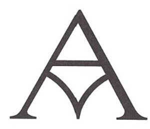

Trade Mark Journal No.2025/043 24 October 2025
UK00004248596 13 August 2025 (3,9,10,11,35,41,42,44)

- Class 3
- Facial peel preparations for cosmetic use; Removable tattoos for cosmetic purposes; Powder compact refills [ cosmetics ]; Creams for firming the skin; Aftershave creams; Hair lotion; Skin clarifiers; Nail conditioners; Hair chalks; Cosmetic preparations for eye lashes; Shower preparations; Skin lotion; Eau de colognes; Eyebrow powder; Hair tonics [for cosmetic use]; Lip balms [non-medicated]; Salves [non-medicated]; Eau de parfum; Non-medicated diaper rash cream; Beauty masks; Hair care preparations; Cosmetics all for sale in kit form; Gel eye patches for cosmetic purposes; Lip conditioners; Facial moisturizers; Hand cleansers; Creamy face powder; Exfoliating scrubs for the body; Milky lotions for skin care ; Day lotion; Perfumed powders; Body creams [ cosmetics ] ; Baths ( Cosmetic preparations for- ) ; Nail varnish removers; Blush pencils; Collagen for cosmetic purposes; Face glitter; Body mask powder; Compounds for skin care after exposure to the suns rays; Pencils ( Cosmetic - ) ; Tints for the hair; Cosmetic powder; Eye stylers; Cosmetic preparations for dry skin during pregnancy; Perfumery products; Dental bleaching gels; Body and facial butters; Shave balm; Eye makeup remover; Scented fabric refresher spray; Facial packs for toilet purposes; Hair care serum ; Cosmetic preparations for eyelashes; Hair preservation treatments for cosmetic use; Face creams; Hand soap; Suntan lotions; Cosmetics containing panthenol; Shower and bath foam; Hair lotions; Lip liners; Preparations for the care of the body; Hair tonic [ for cosmetic use ] ; Smoothing emulsions [ cosmetics ] ; Make-up pencils; Non-medicated skin balms; Leaves of plants ( Preparations to make shiny the- ) ; Air fragrancing preparations; Ambergris; Anti-aging cream; Face and body masks; Skin care cosmetics; Lip polisher; Sun protection preparations; Skin moisturiser; Artificial eyelashes; Bath creams; Facial care preparations; Perfumeries; Nail paint [ cosmetics ] ; Lotions for strengthening the nails; Shave gel; Body mist; Skin cream; Skin creams [ non- medicated ]; Topical skin sprays for cosmetic purposes; Creams for fixing hair; Skin toners; Cakes of soap for body washing; Shaving soap; Gels for cosmetic purposes; Cosmetic body scrubs; Shaving soaps; Glitter in spray form for use as a cosmetics; Self tanning lotions [ cosmetic ] ; Scented linen sprays; Hand oils ( Non-medicated - ) ; Soap pads; Aloe soaps; Deodorants for personal use [ perfumery ] ; Conditioning creams; Cosmetic eye gels; Nail polish remover pens; Body cream soap; Sun-tanning preparations [ cosmetics ] ; Creams ( Non-medicated - ) for the body; Tanning preparations; Hair mascara; After-shave preparations; Facial oil; Creams for the skin; Facial soaps; Tooth powders [ for cosmetic use ] ; Face dusting powders; Sun tan lotion; Bathing lotions; Aromatherapy creams; Facial cleansing grains; Cold creams; Suntan creams [ self-tanning creams ] ; Hand cream; Body and facial oils; SPF sun block sprays; Body oils [ for cosmetic use ] ; Make-up preparations for the face and body; Cloths impregnated with a skin cleanser; Eyelashes ( Cosmetic preparations for - ) ; Plants ( Preparations to make shiny the leaves of- ) ; Anti-ageing creams [ for cosmetic use ] ; Chalk for make-up; Eye gels; Facial massage oils; Baby body milks; Depilatory creams; Cleansing cream; Cosmetic oils for the epidermis; Shaving oil; Eye liner; Preparations for the shower; Pre-moistened cosmetic wipes; Nail polish removers [ cosmetics ] ; Polishes ( Denture - ) ; Lip rouge; Face gels; Linen ( Sachets for perfuming - ) ; Liquid soap used in foot baths; Sun screen preparations; Clay skin masks; Shampoos for pets [ non-medicated grooming preparations ] ; Cleansing creams [ cosmetic ] ; Hair-washing powder; Eyebrow cosmetics; Cosmetic products for the shower; Acne cleansers, cosmetic; Fumigation preparations [ perfumes ] ; Non-medicated preparations for the relief of sunburn; Colour removers for the hair; Preservative creams for leather; Potpourri sachets for incorporating in aromatherapy pillows; Cosmetic hand creams; Aloe vera gel for cosmetic purposes; Age spot reducing creams; Cosmetic sunscreen preparations; Bath crystals ( Non-medicated - ) ; Bath lotion; Liners [ cosmetics ] for the eyes; Pre-shave creams; Skin fresheners; Make-up for compacts; Perfumed powder [ for cosmetic use ] ; Body glitters; Oils for perfumes and scents; Talcum powder, for toilet use; Cosmetic patches containing sunscreen and sun block for use on the skin; Eye make up remover; Liquid perfumes; Hair colorants; Cosmetics for suntanning; Perfumed lotions [ toilet preparations ] ; Cleansing masks; Skin care creams [ cosmetic ] ; Decorative cosmetics; Scented soaps; Shave creams; Beard care preparations; Cosmetic creams for firming skin around eyes; Preparations for use after shaving; Nutritional creams ( Non-medicated - ) ; Make-up bases in the form of pastes; Loofah soaps; Color- [ colour- ] brightening chemicals for household purposes [ laundry ] ; Antiperspirant soap; Facial cream [ for cosmetic use ] ; Scented room sprays; Talcum powder; Body paint ( cosmetic ) ; Facial creams [ cosmetic ] ; Body mask lotion; Skin hydrators being injectable dermal fillers; Skin conditioning creams for cosmetic purposes; Styling gels; Bath concentrates ( Non-medicated - ) ; Scents; Dusting powder [ for toilet use ] ; Bubble bath preparations [ for cosmetic use ] ; Cosmetic preparations for baths; Hair care masks; Lip protectors [ cosmetic ] ; Sunscreen cream; Skin texturizers; Sun care lotions [ for cosmetic use ] ; Eyebrow colors in the form of pencils and powders; Nail-polish removers; Hair balms; Cosmetic preparations against sunburn; Foot powder [ non-medicated ] ; Lip cosmetics; After-shave lotions; Washing powder; Aftershave gels; Aftershave; Exfoliating creams; Dermatological creams [ other than medicated ] ; Face paint; Soap powder; Body sprays [ non-medicated ] ; Cosmetics in the form of oils; Refill packs for shower gel dispensers; Eyelid doubling makeup; Scented water for fragrancing; Depilatory preparations; Non-medicated moisturisers; Eye cream; Hair tonic [ non-medicated ] ; Hair oil; Temporary tattoos for cosmetic purposes; Wipes impregnated with a skin cleanser; Non-medicated balm for hair; Bath oils ( Non-medicated - ) ; Scented fabric refresher sprays; Non-medicated oils; Rose oil for cosmetic purposes; After shave lotions; Skin, eye and nail care preparations; Non-medicated foot lotions; Face powder; Geraniol fragrancing compounds; Facial preparations; Microdermabrasion polish; Skin cleansing cream; Soapy gels; Facial masks; Aftershave emulsions; Skin moisturizer masks; Baby care products (Non-medicated -); Eyeliner pencils; Hair wax; Cosmetic mud masks; Hair gel; Skin cleansing lotion; Moisturising preparations; Tanning gels [cosmetics]; Skin softening preparations; Pumice stones for use on the body; Lotions for cellulite reduction; Shoe polish and creams; After-shave balms; Shiny (Preparations to make the leaves of plants -); Bath oils; Body milk; Body cream; Skin lotions; Skin lightening creams; Liquid bath soaps; Smoothing emulsions for the skin; Cosmetics and cosmetic preparations; Hair care lotions [for cosmetic use]; Make-up preparations; Perfume water; Nail polishing powder; Creamy foundation; Blusher; Suntan oils for cosmetic purposes; Cosmetic moisturisers; Sunscreen preparations; Nail polish remover; Concealers for spots and blemishes; Heliotropin fragrancing compounds; Non-medicated toothpaste; Solid perfumes; Adhesives for false eyelashes, hair and nails; Make-up palettes containing cosmetics; Cleansing creams; After-sun preparations for cosmetic use; Non-medicated mouth washes; Anti-ageing serum; Concealers; Hair moisturisers; Moisturizing creams; Foot scrubs; Natural oils for perfumes; Oil baths for hair care; Talcum powders for toilet use; Hair styling gels; Make-up powder; Moisturizers; Hair cream; Polish; Artificial pumice stone; Lip liner; Lip protectors (Non-medicated -); Pomades for cosmetic purposes; Skin cleansing cream [non- medicated]; Shaving stones being astringents for cosmetic purposes; Room fragrancing preparations; Face wash [ cosmetic]; Moist wipes impregnated with a cosmetic lotion; Incense spray; Anti-perspirant deodorants; Bath gels; Hair balm; Body care cosmetics; Beauty tonics for application to the face; Sun-tanning creams and lotions; Facial masks [cosmetic]; Potpourris [fragrances]; Shaving creams; Shaving sprays; Make-up pads of cotton wool; Fair complexion creams; Nail varnish for cosmetic purposes; After-sun oils [cosmetics]; Eau de cologne; Eyebrows [false]; Cleansing balm; Pre-shave foams; Cosmetics for use on the skin; Hair protection gels; Non-medicated pet shampoos; Sunscreens [for cosmetic use]; Bleaching preparations; Anti-ageing creams; Fragrance emitting wicks for room fragrance; Creams (Skin whitening - ); Exfoliants; Nail art stickers; Toners for cosmetic purposes; Theatrical makeup; Skin care mousse; Agarwood [incense]; Body scrubs; Self-tanning preparations [cosmetic]; Non-medicated mouth rinse; Non-medicated mouthwashes; Shaving preparations; Make-up removing milks; Beauty serums with anti-ageing properties; Cleaning pads impregnated with cosmetics; Eyeshadow palettes; Whitening the skin (Cream for -); Cleaning masks for the face; Hairstyling masks; Cosmetic products in the form of aerosols for skincare; Refill packs for skin care cream dispensers; Facial wash; Shaving balms; Foot care preparations (Non-medicated - ); Eyeliner; Skin soap; Night creams [cosmetics]; Shaving sets, comprised of shaving cream and aftershave; Non-medicated toiletry preparations; After-shave; After-sun lotions; Cosmetic eye pencils; Fragrant sachets; Body lotions; Hair rinses [for cosmetic use]; Lotions for face and body care; Non-medicated stimulating lotions for the skin; Cosmetic facial masks; Preparations for use before shaving; Leather (Creams for -); Scented wood; Bath herbs; Colour cosmetics for the eyes; Eye gel; Skin calming serum; Moisturising skin creams [cosmetic]; Skin emollients; Hand masks for skin care; Scented body lotions and creams; Cosmetic preparations for use as aids to slimming; Lavender oil for cosmetic use; Lip neutralizers; Sheet masks for cosmetic purposes; Hair strengthening treatment lotions; Facial wipes impregnated with cosmetics; Face wash; Potpourris; Reed diffusers; Sun-tanning oils; Tooth polishes; Cotton wool in the form of wipes for cosmetic use; Non-medicated skin clarifying lotions; Aromatic potpourris; Self-tanning preparations [cosmetics]; Balms (Non-medicated -); Sun-tanning gels; Moisture body lotion; Fragrance preparations; Oils for toiletry purposes; Synthetic vanillin (perfumery); Beauty care preparations; Cosmetics in the form of creams; Room perfumes in spray form; Non-medicated creams; Smoothing stones; Non medicated skin toners; Aftershave moisturising cream; Cosmetic preparations for protecting the skin from the sun's rays; Skin cleansers [non-medicated]; Exfoliating scrubs for the face; Face wipes; Body soap; Cosmetic hair dressing preparations; Perfume; Sun tan oil; Vanilla perfumery; Eyelashes; Cosmetics for eye-brows; Facial moisturisers [cosmetic]; Body massage oils; False nails; Geraniol for fragrancing; Cleaning and fragrancing preparations; Shower gels; Bath and shower oils [non-medicated]; Skin cleansers [cosmetic]; Body cleansing foams; Air fragrance reed diffusers; Cosmetic facial lotions; Cosmetics preparations; Dyes (Cosmetic -); Non-medicated foot cream; Cosmetics for the treatment of dry skin; Moisturising creams; Preparations and products for fur care; Face cream (Non-medicated -); Face scrubs (Non-medicated - ); Long lash mascaras; Fragrances for automobiles; Hair color removers; Anti- perspirants; Cosmetic creams for the skin; Make-up primer; Nail primer [cosmetics]; Body splash; Perfuming sachets; Skin whitening preparations [cosmetic]; Anti-ageing moisturiser; Shampoo; Shower oils; Facial toners [cosmetic]; Oils for moisturising the skin after sunbathing; Hand gels; Shining preparations [polish]; Facial packs [cosmetic]; Massage gels other than for medical purposes; Facial gels [cosmetics]; Foot masks for skin care; Preparations to make shiny the leaves of plants; Skin cream [for cosmetic use]; Non-medicated shower oils; Perfume oils; Make-up; Cosmetic creams and lotions; Creams for leather; Hair serums; Body butter; Non-medicated skincare preparations; Powder for make-up; Moisturising skin lotions [cosmetic]; Pro-collagen for cosmetic purposes; Cosmetic preparations for the care of mouth and teeth; Facial cleansing milk; Night cream; Anti-aging creams [for cosmetic use]; Rosemary oil for cosmetic use; Toiletry preparations; Skin lightening compositions [cosmetic]; Incense sachets; Eye shadow; Smoothing preparations [starching]; Non-medicated cosmetics; Sets of cosmetic oral care products; Essential oils as perfume for laundry purposes; Lavender gel; Lip balms; Cosmetic soap; Face masks; Dandruff shampoo; Foot balms (Non-medicated-); False eyelashes; Aromatics for fragrances; Scented body lotions; Anti-perspirant preparations; Make-up removing creams; Hair care agents; Face and body lotions; Colognes; Bath flakes; Bath preparations (Non-medicated - ); Shampoos for animals [non-medicated grooming preparations]; Musk [perfumery]; Gels for cosmetic use; Fragrance for household purposes; Cosmetic sun milk lotions; Aftershave milk; Scented body creams; Make-up removing lotions; Exfoliant creams; Nail enamel removers; Scented oils; Scented ceramic stones; Skin moisturizers used as cosmetics; Spot remover; Personal deodorants; Throat sprays [non-medicated]; Refills for electric room fragrance dispensers; Suncare lotions; Skin whitening creams; Face oils; Skin creams [cosmetic]; Skincare preparations; Aftershave balm; Masks (Beauty -); Soap (Deodorant - ); Make-up removing milk; Aloe vera preparations for cosmetic purposes; Nail polish removers; Hair styling gel; After-sun lotions [for cosmetic use]; Anti-aging creams; Bleaching preparations for the hair; Camouflage cream; lonone [perfumery]; Henna powders; Sun-tanning creams; Polishing stones; Suntan creams; Non-medicated bath preparations; Shampoos for human hair; Skin care oils [non-medicated]; Foot perspiration (Soap for -); Flowers (Extracts of -) [perfumes]; Cream soaps; Sun block [cosmetics]; Foam bath preparations; Dusting powder; Face and body creams; Facial oils; Scented bathing salts; Cosmetics for the use on the hair; Cosmetic creams for dry skin; Baby oils; Facial scrubs [cosmetic]; Waterproof sunscreen; Base cream; Ethereal oils for fragrancing; Natural perfumery; Foaming bath gels; Perfumes for cardboard; Cosmetics in the form of eye shadow; Hair gels; After-shave creams; Gels for use on the hair; Body gels; Cosmetic soaps; Exfoliating scrubs for cosmetic purposes; Fragrance refills for non-electric room fragrance dispensers; After-sun milks [cosmetics]; Lotions (Tissues impregnated with cosmetic- ); Exfoliating scrubs for the feet; Powder (Make-up -); Body and facial creams [cosmetics]; Solid powder for compacts [cosmetics]; Anti-aging skincare preparations; Ointments for cosmetic use; After-sun milk [cosmetics]; Anti-wrinkle creams [for cosmetic use]; Extracts of perfumes; Beauty balm creams; Preparations for the bath; Soaps in gel form; Bath creams (Non-medicated-); Creams (Soap -) for use in washing; Moisturisers [cosmetics]; Facial washes; Tissues impregnated with cosmetic lotions; Essences for fragrancing; Nail hardeners [cosmetics]; Lip cream; Cosmetics for eye-lashes; Make-up foundations; Pumice stone; Eyebrow styling wax; Hand lotion (Non-medicated -); Anti-aging moisturizers; Tanning oils [cosmetics]; Non-medicated beauty preparations; Wrinkle resistant creams [for cosmetic use]; Anti-ageing serums for cosmetic purposes; Eyebrow pencils; Pre-moistened cosmetic tissues; Henna for cosmetic purposes; Facial beauty masks; Skin whitening preparations; Eyebrow mascara; Nail gel; Deodorants for body care; Colour cosmetics for children; Washing creams; Skin balms [cosmetic]; Tissues impregnated with essential oils for cosmetic use; Hair powder; Hair creams; Tooth gel; Anti-aging moisturizers used as cosmetics; Hand lotions; Cream foundation; Fingernail tips; Perfumed potpourris; Eyes pencils; Foot deodorant spray; Beauty soap; Baby lotion; Skin make-up; Beauty tonics for application to the body; Distilled oils for beauty care; Hair emollients; Eaux de Cologne; Skin hydrators for cosmetic purposes; Non-medicated foot soaks; Hair and body wash; Massage oil; Fumigating incenses (Kunko); Skin balms (Non-medicated -); Colouring lotions for the hair; Body fragrances; Cosmetic suntan lotions; After sun creams; Household fragrances; Cleaner for cosmetic brushes; Body oil spray; Skin moisturisers; Non-medicated douches; Blushers; Hair moisturizers; Sun tan gel; Wax strips for removing body hair; Beauty gels; Perfumed creams; After sun moisturisers; Cosmetic hair regrowth inhibiting preparations; Lotions for cosmetic purposes; Varnish removers; Powder compacts [cosmetics]; Age spot reducing creams for cosmetic use; Lip coatings (Non-medicated -); Body powder; Fragrances for personal use; Tanning milks [cosmetics]; Shower and bath gel; Body sprays; Natural cosmetics; Sun care preparations; Cologne impregnated disposable wipes; Suntan lotion [cosmetics]; Facial emulsions; Soaps and gels; Cosmetic creams; Shower gel; Suntanning preparations; Citronella oil for cosmetic use; Hair preparations and treatments; Non-medicated toiletries; Perfumery; Sun-block lotions; Body souffle; Body masks; Hair colour removers; Gel eye masks; Make-up removing gels; Hairdressing preparations; Cold cream, other than for medical use; Talcum powder [for cosmetic use]; Lip stains for cosmetic purposes; Synthetic perfumery; Fragrances; Skin conditioners; Cosmetic preparations for bath and shower; Sun care preparations for cosmetic use; Anti-aging serum for cosmetic use; Bath lotions (Non-medicated -); Spirit gum for cosmetic use; Aromatic oils for the bath; Cosmetic nail preparations; Cosmetic foams containing sunscreens; Cosmetic dyes; Cleansing mousse; Cosmetics for protecting the skin from sunburn; Cosmetic preparations for the hair and scalp; Foundation make-up; Makeup setting sprays; Mascara; Cosmetic tanning preparations; Spray polish; Hand and body butter; Face paints; Non-medicated shampoos; Eyeshadow; Perfumery and fragrances; Pores tightening mask packs used as cosmetics; Body scrubs [cosmetic]; Non-medicated face care preparations; Eye correction serum; Skin moisturizers; Moisturising body lotion [cosmetic]; Lip gloss; Refill packs for hand soap dispensers; Bath cream; Eye cosmetics; Hair bleaching preparations; Massage gels, other than for medical purposes; Cologne water; Organic makeup; Nail varnish; Sun tan milk; Perfumed body lotions [toilet preparations]; Facial lotions; Shaving balm; Day creams; Beard balm; Tissues impregnated with cosmetics; Aromatherapy preparations; Milks [cosmetics]; Face packs (cosmetic); Fingernail decals; Depilatory lotions; Body paint for cosmetic purposes; Liquid soaps for hands and face; Skin care creams, other than for medical use; Tooth powder [for cosmetic use]; Skin masks [cosmetics]; Paper hand towels impregnated with cleaning agents; Gel sprays being styling aids; Bath pearls (Non-medicated -); Aftershave lotions; Hydrating masks; Styling gels for the hair; Nail varnishes; Aftershave balms; Facial lotion; Cosmetic nail care preparations; Body spray; Moisturizing milk; Mousses [cosmetics]; Patches containing sun screen and sun block for use on the skin; Mouthwash; Serums for cosmetic purposes; Facial makeup; Cosmetic kits; Skin recovery creams [cosmetics]; Anti-wrinkle creams; Cleansing lotions; Exfoliating body scrub; Non-medicated lotions; Hairspray; Cosmetic sun-tanning preparations; Cosmetic preparations for skin renewal; Sun protectors for lips; Wrinkle resistant creams; Facial washes [cosmetic]; Massage creams, not medicated; Talcum powders [for cosmetic use]; Beauty masks for hands; Moisturizing body lotions; Sun blocking preparations [cosmetics]; Hand soaps; Multifunctional makeup; Skin hydrators; Face powder in the form of powder-coated paper; Slimming aids [cosmetic], other than for medical use; Multifunctional cosmetics; Roll-on deodorants [toiletries]; Body firming creams; Dentifrice powder; Anti-wrinkle cream; Body mask cream; Non-medicated cosmetics and toiletry preparations; Under-eye enhancers; Non-medicated bath oils; Massage oils and lotions; Aloe soap; Bath and shower gels; Hand scrubs; Cuticle oil; Cleansing products for the eyes; Cosmetic pencils for cheeks; Hair care creams [for cosmetic use]; Face scrub; Cuticle cream; Cleansing milks for skin care; Amber [perfume]; Body creams; Hair protection lotions; Cosmetics for animals; Hand washes; Cosmetic hair lotions; Eyelashes (False - ); Non-medicated hair treatment preparations for cosmetic purposes; Beauty serums; Creams (Non-medicated-) for the eyes; Skin tonics [non-medicated]; Face powder [for cosmetic use]; Hair care serums; Exfoliating scrubs for the hands; Functional cosmetics; Lip gloss palettes; Mattifying gel cream; Sun blocking lipsticks [cosmetics]; Cosmetics in the form of lotions; Body powder (Non-medicated -); Nail polish top coat; Floor wax remover; Scented sachets; Lacquer for cosmetic purposes; Eyelid pencils; Eyelid shadow; Beauty milks; Artificial nails; Cleansing oil; Massage oils, not medicated; Non-medicated bubble bath preparations; Cosmetic masks; Perfuming preparations for the atmosphere; Lip pomades; Solid powder for compacts; Eye concealers; Skin care products for animals; Liquid soap used in foot bath; Cosmetic products in the form of aerosols for skin care; Perfume oils for the manufacture of cosmetic preparations; Artificial nails for cosmetic purposes; Suntanning oil [cosmetics]; Glue for strengthening nails; Shoe polish applicators containing shoe polish; Facial packs; Eaux de cologne; Non-medicated body soaks; Non-medicated bath salts; After-shave gel; Sunscreen creams; Liquid foundation; Emollient shampoos; Bath foams (Non-medicated -); Moisturising concentrates [cosmetic]; Body shampoos; Shaving stones [astringents for cosmetic purposes]; Perfumes for ceramics; Nail base coat [cosmetics]; Shaving lotion; Loose face powder; Humectant preparations [cosmetics]; Shaving cream; Make-up removers; Hair nourishers; Mascaras; Cosmetic massage creams Henna [cosmetic dye]; Horse oil cream for skin care; Skin toners [cosmetic]; Nail repair preparations; Soap for brightening textile; Fragrance sachets; Gel nail removers; Tanning preparations [cosmetics]; Cologne; Cedarwood perfumery; Lip care preparations; Cotton for cosmetic purposes; Cream deaners (Non-medicated -); Blush; Eye creams; Cosmetic preparations for skin firming; Hair colouring and dyes; Hair mousse; Skin creams; Nail tips [cosmetics]; Exfoliants for the cleansing of the skin; After-shave emulsions; Skin care (Cosmetic preparations for -); Shave preparations; Non-medicated skin care preparations; Perfumed soap; After-sun creams; Body moisturisers; Non-medicated lip balms; Make-up for the face and body; Soap sheets; Lipstick; Body lotion; Washing preparations; Room fragrancing products; Hand creams; Scented linen water; Massage oils; Suncare lotions [for cosmetic use]; Toning spritz; Body emulsions; Eye compresses for cosmetic purposes; Nail buffing preparations; Lip pencils; Extracts of flowers[perfumes]; Suntan oils [cosmetics]; Sunscreen creams [for cosmetic use]; Lotions for the skin; Babies' creams [non-medicated]; Eye wrinkle lotions; Sun creams [for cosmetic use]; Exfoliants for the care of the skin; Scented body spray; Non-medicated skin creams; Mint for perfumery; Scented oils used to produce aromas when heated; Hydrating creams for cosmetic use; Lip glosses; Perfumed oils for skin care; Skin fresheners [cosmetics]; Soap; Body cream for cosmetic use; Fair complexion cream; Lipstick cases; Skincare cosmetics; Night creams; Skin toner; Beauty creams; Preparations to make the leaves of plants shiny; Cosmetics containing hyaluronic acid; Tooth whitening creams; Non-medicated mouth sprays; Gels (Dental bleaching -); Moisturizing preparations for the skin; Bath and shower foam; Day cream; Makeup; Lip stains [cosmetics]; Cuticle oils; Non-medicated dental rinse; Non-medicated lip care preparations; Cosmetic sun-protecting preparations; Bath preparations; not medicated Liquid eyeliners; Cosmetics in the form of powders; Sun care lotions; Eyelash tint; Nail strengtheners; Nail care preparations; Cosmetic creams for skin care; Shower creams; Cheek colors; Cream for whitening the skin; Body polish; Gel scrub; Hair oils; Self tanning creams [cosmetic]; Gels for fixing hair; Pomanders [aromatic substances]; Sun bronzers; Make up removing preparations; Deodorant soap; Perfumes; Preparations for protecting the hair from the sun; Cosmetic preparations for nail drying; Facial conditioning preparations; Body talcum powder; Adhesives for cosmetic use; Shaving lotions; Make-up remover; Cosmetic paste for application to the face to counteract glare; Nail varnish removing preparations; Non-medicated cleansing creams; Nail cream; Peppermint oil [perfumery]; Aromatherapy pillows comprising potpourri in fabric containers; Cosmetic nourishing creams; Collagen preparations for cosmetic application; Face and body glitter; Skin care lotions [cosmetic]; Eau de Cologne; Aftershaves; Hair cosmetics; Baby bottom balm; Body oil [for cosmetic use]; Under eye correctors; Massage candles for cosmetic purposes; Sun barriers [cosmetics]; Artificial tanning preparations; Eyebrow gel; Cosmetic body mud; Facial creams; Non-medicated hair shampoos; Sunscreen [for cosmetic use]; Cosmetics for children; Colour cosmetics for the skin; Solid powder for cosmetic compacts; Coloring preparations for cosmetic purposes; Eye shadows; Colour cosmetics; Massage waxes; Hair treatment preparations; Tanning creams; Non-medicated toilet soaps; Tooth polish; Bath gel; Cosmetic face powders; Cosmetics; Perfumed sachets; Nails (False -); Anti-wrinkle cream [for cosmetic use]; Wrinkle-minimizing cosmetic preparations for topical facial use; Essences for skin care; Colouring preparations for cosmetic purposes; Soap (Antiperspirant -); Body butters; Lip coatings [cosmetic]; Shaving stones; Cosmetic sun oils; Organic cosmetics; Non-medicated dentifrices; Non-medicated toilet preparations; Eyes make-up; Eucalyptus oil for cosmetic use; Pre-shave gels; Beauty lotions; Non-medicated sun care preparations; Make-up for the face; Skin emollients [non-medicated]; Hair care creams; Non-medicated antiperspirants; Body cleaning and beauty care preparations; Foot smoothing stones; Hair pomades; Non-medicated soaps; Skin moisturizer; Body emulsions for cosmetic use; Cheek rouges; Toning lotion, for the face, body and hands; Softening cleanser [cosmetic]; Eyelash dye; Facial serum for cosmetic use; Nail enamel remover; Lip balm [non-medicated]; Pre-shaving lotions; Bath powders (Non-medicated -); Kits (Cosmetic-); Hairstyling serums; Bath gels (Non-medicated-); After-sun milk; Moist paper hand towels impregnated with a cosmetic lotion; Eye make-up; Tonics [cosmetic]; Nail hardeners; Sparkling fluid for the body; Hair protection creams; Adhesives for affixing false nails; Facial concealer; Facial lotions [cosmetic]; Hair removal preparations; Natural makeup; Hair fixing oil; Styling lotions; Tissues impregnated with a skin cleanser; Nail glitter; Oils for the skin; Make-up kits; Non-medicated scalp treatment cream; Adhesives for fixing false nails; Aromatics for perfumes; Beauty care cosmetics; Lipsticks; Adhesives for cosmetic purposes; Creams for tanning the skin; Pedicure preparations; Slimming purposes (Cosmetic preparations for -); Scrubbing powder; Paper hand towels impregnated with cosmetics; Facial toner; Face blusher; Perfumed powder; Non-medicated body care preparations; Bath powder [cosmetics]; Body oil; Sun-tanning preparations; Nail polish base coat; Skin masks; Cleaning and shining preparations for plant leaves; Nail makeup; Hair removing cream; Skin foundation; Piperonal fragrancing compounds; Body oils; Moisturising creams; lotions and gels; Polishing creams; Moisturisers; Facial scrubs; Nail polish; Shaving oils; Body gels [cosmetics]; Jasmine oil; Beard oil; Cosmetic skin enhancers; Lip tints; Lint for cosmetic purposes; Non-medicated skin lotions; Cosmetic preparations for body care; Hair relaxing preparations; Soap products; Sun protecting creams [cosmetics]; Cosmetics containing keratin; Dental polish; Nail enamels; Skin creams [for cosmetic use]; Make-up primers; Adhesives for artificial nails; Non-medicated hair lotions; Eye lotions; Eye pencils; Cosmetic hair care preparations; Cleansing gels; Nail decolorants; Make-up removing preparations; Eye care products, non-medicated; Varnish (Nail -); Baby oil; Cosmetic preparations; Baby shampoo mousse; Cosmetics for use in the treatment of wrinkled skin; Eyeliners; Nail varnish remover [cosmetics]; Bath and shower gel; Facial creams [for cosmetic use]; Nail polish pens; Disposable wipes impregnated with cleansing compounds for use on the face; Cold creams for cosmetic use; Hair lacquers; Scented toilet waters; Eye brightening correctors; Moisturiser; Blemish balm creams; Bath preparations; Scalp treatments (Non-medicated -); Shoe polish; Beauty milk; Eau de cologne [cologne water]; Make-up foundation; Extracts of flowers being perfumes; Bath and shower gels, not for medical purposes; Shower soap; Make up foundations; Skin cleansers; Natural oils for cosmetic purposes; Eyebrow colors; Creams for cellulite reduction; Shaving gels; Face powders [for cosmetic use]; Nail tips; Nappy cream [non- medicated]; Body deodorants [perfumery]; Aromatherapy lotions; Hair liquid; Bath oils for cosmetic purposes; Eye-shadow; Nail enamel; Tissues impregnated with make-up removing preparations; Cosmetic pencils; Sunscreen lotions; Procollagen for cosmetic purposes; Sun blocking oils [cosmetics]; Skin care preparations; Non-medicated massage preparations; Preparations for removing gel nails; Body glitter; Facial cleansers; Deodorants and antiperspirants; Cheek colours; Skin care oils [cosmetic]; Nail cosmetics; Room perfume sprays; Pencils (Eyebrow-); Creams (Cosmetic-); Hair shampoo; Shining preparations being polish; Cosmetic preparations for slimming purposes; Face creams for cosmetic use; Powder for forming sculpted finger nail tips; Nail whiteners; Incense; Deodorants for the feet; Skin cleaners [non- medicated]; Collagen preparations for cosmetic purposes; Facial cream; Barrier creams; Perfumed powders [for cosmetic use]; Emollient preparations [cosmetics]; Hair care lotions; Ethereal essences and oils; Skin relief serum [cosmetic]; Talcum powder (Non-medicated -) for babies; Body milks; Eyeshadows; Non-medicated skin serums; Cosmetic preparations for skin care; Body scrub; Body washes; Make-up base; Facial creams [cosmetics]; Soap for foot perspiration; Cosmetic suntan preparations; Soaps for brightening textiles; Fragrance sachets for eye pillows; Lotions for beards; Room fragrances; Ethereal oils for cosmetic purposes; Cuticle removers; Soaps for body care; Foundation; Lip balm; Facial butters; Body wash; Pre-shave preparations; Hair moisturising conditioners; Feminine deodorant sprays; Hair masks; Beauty creams for body care; Face powders; Body deodorants; Facial cleansers [cosmetic]; Skin cleansing foams; Face powder (Non-medicated-); Cosmetics in the form of gels; Air fragrance preparations; Cosmetic white face powder; Cosmetic skin fresheners; Retinol cream for cosmetic purposes; Recovery creams for cosmetic use; Shower cream; Lip makeup; Fluid creams [cosmetics]; Perfumed soaps; Products for protecting coloured hair; Skin deaning and freshening sprays; Toning creams [cosmetic]; Eye sticks; Beauty preparations for the hair; Liquid latex body paint for cosmetic purposes; Shaving gel; Wrinkle removing skin care preparations; Skin lighteners; Sachets for perfuming linen; Perfumes for industrial purposes; Moisturising gels [cosmetic]; Dressings for nail reconstruction; Denture polishes; Mask pack for cosmetic purposes; Oral care preparations [non-medicated]; Body and facial gels [cosmetics]; Cosmetic facial packs; Sun creams.
- Class 9
- User-programmable humanoid robots, not configured; Wireless headsets for smart phones; Biometric identification apparatus; Artificial intelligence software for healthcare; Artificial intelligence apparatus; Electronic device software drivers that allow computer hardware and electronic devices to communicate with each other; Light emitting diodes (LEDs); Music recordings; Application software for wireless devices; Peripherals adapted for use with computers and other smart devices; Laser equipment for non-medical purposes; Interactive computer software; Wearable audio equipment; Skin moisture analyzers, not for medical purposes; Biometric identity cards; Computer software for mobile applications that enable interaction and interface between vehicles and mobile devices; Smartphone software; Software for Smart Contracts; Virtual assistant software; Virtual reality software for simulation; Simulation software [training]; Smart glasses; Biometric retinal scanners; Microchip cards; Electronic notebooks; Downloadable applications; Computer software applications, downloadable; Augmented reality software for use in mobile devices for integrating electronic data with real world environments; Computer hardware modules for use in electronic devices using the Internet of Things [loT]; Virtual server software; Publications in electronic form; Application software for robot; Computer chatbot software for simulating conversations; Downloadable applications for use with mobile devices; Smart home hubs; Downloadable software applications for mobile phones; Wireless headsets for mobile phones; Wearable speakers; Smart home software; Mobile software; Educational mobile applications; Smart cards [integrated circuit cards]; Virtual reality models; Wearable monitors; Downloadable publications in electronic form; Biometric scanners; Wearable computer peripherals; Downloadable application software for virtual environments; Mirrors [optics]; Software for the integration of artificial intelligence and machine learning in the field of Big Data; Computer peripheral devices; Downloadable software; Smart speakers; Wireless communication devices for the transmission of multimedia content; Headphones for smart phones; Augmented reality software for simulation; Software applications for use with mobile devices; Application software; Application simulation software; Touch pads; Electronic communication equipment and instruments; Facial recognition software; Augmented reality software for use in mobile devices; Virtual reality headsets; Virtual reality glasses; Measuring devices; Smart cards; Computer hardware modules for use in Internet of Things electronic devices; Bio-sensors; Wearable communications apparatus; Light sensors; Virtual reality software for education; Artificial intelligence and machine learning software; Downloadable music sound recordings; Simulation software; Earthing apparatus; Digital sensory devices; Mobile application software; Wearable computer peripheral devices; Encoded smart cards; Smartphone software applications, downloadable; Artificial intelligence software; Virtual and augmented reality software; Music headphones; Artificial intelligence software for analysis; Information technology and audio-visual, multimedia and photographic devices; Digital audio interface apparatus; Electronic notepads; Encoded membership cards; Wireless controllers to remotely monitor and control the function and status of other electrical, electronic and mechanical devices or systems; Augmented reality software; Computer software for wireless network communications; Personal digital assistants; Application software for mobile phones; Facial recognition apparatus; Mobile apps; Virtual reality software; Application software for social networking services via internet; Microchips [computer hardware]; Computer application software for use with wearable computer devices; Wireless communication devices for voice, data, or image transmission; Watchbands that communicate data to other electronic devices; Application software for smart phones; Virtual Reality [VR] motion simulators; Computer application software for use in implementing the Internet of Things [loT]; Computer application software for mobile phones; Simulation software [entertainment]; Virtual reality goggles; Application software for mobile devices; Audio electronic apparatus; Downloadable smart phone applications (software); Personal digital assistants (pda's); Infrared sensors; Downloadable computer software for use as an application programming interface (API); Smart rings; Intelligent Character Recognition (ICRJ software); Downloadable smart phone application software; Software and applications for mobile devices; Interactive software based on artificial intelligence; Downloadable mobile applications for use with wearable computer devices; Wearable communications devices in the form of wristwatches; Facial analysis software; Humanoid robots having communication and learning functions for assisting and entertaining people; Multimedia devices; Light emitting diodes; Robotic electrical control apparatus; Software applications for mobile devices; Smart bracelets; Encoded loyalty cards Virtual reality hardware; Electronically encoded identity bracelets; Downloadable applications for mobile devices; Light diodes; Light pens.
- Class 10
- Electrotherapy instruments for slimming treatments; Transcutaneous electrical muscle stimulators; Physical exercise apparatus for therapeutic use; Apparatus for acne treatment; Laser therapy helmets for treating alopecia; Heat wrap massage apparatus; Massage apparatus for neck and shoulders; Therapeutic and assistive devices adapted for persons with disabilities; Thermal massage pads; Foam massage rollers; Massage mitts; Manual massage instruments; Ultrasonic therapy apparatus; Apparatus for the therapeutic stimulation of the body; LED masks for therapeutic purposes; Hot therapy apparatus; Ultrasound therapy apparatus; Foot massage apparatus; Therapeutic weighted blankets; Heat pads for therapeutic treatment; Low frequency electric therapy apparatus; Electromagnetic wave therapeutic instruments; Apparatus for phototherapy; Massage chairs; Body massagers; Acupressure mats; Crystals for therapeutic purposes; Massage chairs with built-in massage apparatus; Electric massage apparatus for household use; Electrical heating pads for medical [treatment] use; High frequency electromagnetic therapy apparatus; Physical therapy equipment; Electric esthetic massage apparatus; Apparatus for magnet therapy; Acupressure apparatus; Neck massage apparatus; Electric massage apparatus for personal use; Infusion apparatus for therapeutic purposes; Static electric therapy apparatus; Facial aesthetic treatment apparatus using ultrasonic waves; Stockings for therapeutic purposes; Magnets for therapeutic use; Electrodes for picking up electrophysiological parameters; Massage apparatus; Scalp massagers; Therapeutic garments for animals; Foot massagers; Apparatus for the treatment of cellulite; LED facial aesthetic treatment apparatus; Apparatus for physiotherapeutic treatment; Back massage apparatus; Electro-stimulation apparatus for use in therapeutic treatment; Ultrasonic diagnostic instruments for therapeutic purposes; Electric massage chairs; Instruments for massage; Therapeutic facial masks; Massage appliances; Therapeutic devices adapted for the disabled; Massage balls; Computer controlled training apparatus for therapeutic use; Visible light treatment instruments; Heat treatment apparatus; Pillows for therapeutic use; Bioresonance pulse device; Therapeutic magnets; Electric esthetic massage apparatus for household purposes; Electrodes for picking up biological parameters; Therapeutic devices adapted for persons with disabilities; Apparatus for the therapeutic stimulation of the muscles; Electronic stimulation apparatus for physiotherapy; Infrared radiator units for therapeutic purposes; Therapeutic garments for people; Biomagnetic rings for therapeutic or medical purposes; Heat therapy apparatus; Exercise machines for therapeutic purposes; Transcutaneous electrical nerve stimulation apparatus; Compression socks for medical or therapeutic use; Electric massage rollers; Apparatus for electrical muscle stimulation; Apparatus for the therapeutic toning of the muscles; Microdermabrasion apparatus; Electric facial aesthetic treatment apparatus, other than facial steamers; Body toner apparatus [therapeutic]; Therapeutic apparatus incorporating massaging facilities; Physiotherapy apparatus; Therapeutic support bandages; Esthetic massage apparatus; Bio therapeutic facial masks; Therapeutic and assistive devices adapted for the disabled; Physical therapy devices; Galvanic therapeutic appliances; Massage apparatus, electric or non- electric; Computer controlled exercise apparatus for therapeutic use; Gloves for massage; Non-electric massage apparatus.
- Class 11
- LED mood lights; Light shades; Facial saunas; Light-emitting diodes [LED] lighting apparatus; Full spectrum light sources; LED light strips; Electric foot warmers; Smart refrigerators; Electric lighting apparatus; Cooling apparatus; Mood lights; Facial steamers; Fridges for cosmetics; Facial sauna apparatus; Foot warmers; Electric night lights; Steam facial apparatus [saunas]; Electric warming pads, other than for medical use; Lighting apparatus; Refrigerating apparatus and equipment; Night lights [other than candles]; LED nail drying apparatus; Sauna apparatus; Bed warmers; Heating cushions [pads], electric, not for medical purposes; Heating apparatus; Heating pads [cushions], electric, not for medical purposes; Nail lamps; Light diffusers; Steam facial apparatus; Appliances for bathing the feet; Infrared lamps; Electric blankets [bed], other than for medical use; Cushions [pads] (Heating-), electric, not for medical purposes; LED light machines; Electrical heating pads, other than for medical [treatment] use; Electric foot warmers [other than for medical use]; Heat pads; Electric foot baths; Cosmetic refrigerators .
- Class 35
- Commercial information and advice services for consumers in the field of beauty products; Retail services in relation to toiletries; Online retail services relating to cosmetics; Online retail services for downloadable digital music; Retail services in relation to pet products; Retail services in relation to fragrancing preparations; Retail services in relation to downloadable music files; Online retail store services relating to cosmetic and beauty products; Online retail services for downloadable and pre-recorded music and movies; Advertising services relating to cosmetics; Marketing research in the fields of cosmetics, perfumery and beauty products; Retail services in relation to physical therapy equipment.
- Class 41
- Training in the development of computer programs; Training or education services in the field of life coaching; Physical health education; Sound recording and video entertainment services; Health club services [health and fitness training]; Educational and training services relating to healthcare; Entertainment services provided in virtual environments; Education and training services delivered by virtual means; Physical fitness education services; Health and fitness training; Health and wellness training; Education services provided in virtual environments; Providing online virtual guided tours; Education services relating to therapeutic treatments; Education services relating to nutrition; Computer based training; Health club services [exercise]; Educational services relating to beauty therapy; Computer based educational services.
- Class 42
- Software as a service [SaaS] featuring software learning and deep neural networks; Platforms for artificial intelligence as software as a service [SaaS]; Computer technology consultancy; Providing virtual computer environments through cloud computing; Hosting of mobile applications; Encoding of digital music; Programming of software for e-commerce platforms for deep learning; Software as a service [SaaS] featuring computer software platforms for artificial intelligence; User authentication services using single sign-on technology for online software applications; Design and development of virtual reality software; Development services relating to virtual reality software; Design and development of computer hardware and software; Artificial intelligence as a service (AIAAS); Design of virtual reality software; Electronic storage of digital music; Design and development of software in the field of mobile applications; Artificial intelligence consultancy; Development of virtual reality software; Development and design of mobile applications; Software as a service [SaaS] featuring software for machine learning; Hosting software platforms for virtual reality-based work collaboration; Software as a service [SaaS] services featuring software for machine learning, deep learning and deep neural networks.
- Class 44
- Cosmetics consultancy services; Skin care salons; Eyebrow tattooing services; Cosmetic laser treatment of spider veins; Information relating to beauty; Beauty therapy services; Hot stone massage; Cosmetic laser treatment of skin; Health care relating to therapeutic massage; Consultation services relating to massage; Beauty spa services; Salon services (Beauty - ); Cosmetic treatment services for the body, face and hair; Health spa services; Services of a hair and beauty salon; Consultancy provided via the Internet in the field of body and beauty care; Make-up services; Beauty therapy treatments; Services for the care of the scalp; Beauty consultancy services; Massages; Providing information relating to beauty salon services; Cellulite treatment services; Consultancy services relating to cosmetics; Therapy (Physical -); Beauty treatment; Hydrotherapy; Cosmetic body care services; Hair care services; lntradermal pigmentation services; Reiki services; Application of cosmetic products to the face; Beauty care; Deep tissue massage; Body waxing services for the human body; Consultation services relating to skin care; Cosmetic treatment for the body; Spas; Hot stone massage therapy services; Insomnia therapy services; Beauty information services; Foot massage services; Reflexology services; Facial beauty treatment services; Pregnancy massage services; Cosmetic treatment; Beauty consultation services; Beauty salon services; Consultancy in the field of body and beauty care; Beauty care services provided by a health spa; Laser hair removal services; Hygienic and beauty care for animals; Salons (Beauty -); Reflexology; Bodywork therapy; Sports massage; Information relating to beauty care; Therapeutic treatment of the face; Hygienic and beauty care services; Therapeutic treatment of the body; Services for the care of the skin; Beauty treatment services; Aesthetician services; Cosmetic facial and body treatment services; Laser skin tightening services; Beauty care for animals; Beauty consultancy; Cosmetic laser treatment of tattoos; Light therapy services; Cosmetic treatment for the hair; Cosmetic laser treatment for hair growth; Manicure and pedicure services; Electro therapy services for physiotherapy; Hydrotherapy services; Beauty care of feet; Beauty treatment services especially for eyelashes; Advisory services relating to beauty treatment; Infrared sauna services; Physical therapy; Waxing services for the removal of hair from the human body; Hygienic and beauty care for humans; Music therapy; Animal-assisted therapy; Application of cosmetic products to the body; Cosmetic body care services provided by health spas; Cupping therapy services; Consultation services relating to beauty care; Facial treatment services; Cosmetic analysis; Cosmetic electrolysis for the removal of hair; Massage services; Music therapy for physical, psychological and cognitive purposes; Aromatherapy services; Body waxing services for hair removal in humans; Microneedling treatment services; Sauna services; Microdermabrasion services; Physical therapy services; Foot care; Music therapy services; Cosmetic skin tanning services for human beings; Spa services; Eyebrow threading services; Laser skin rejuvenation services; Services for the care of the face; Dermatological services for treating skin conditions; Cosmetic treatment for the face; Therapy services; Nail care services; Cosmetic laser treatment of unwanted hair; Nail salon services; Massage; Beauty care services; Skin care salon services; Beauty counselling; Skin tanning service for humans for cosmetic purposes; Bioresonance treatment and care; Beauty consultation; Cosmetic laser treatment of varicose veins; Micropigmentation services; Cosmetic laser treatment of toenail fungus; Beauty salons; Cosmetic make-up services.
ARAHARA LTD